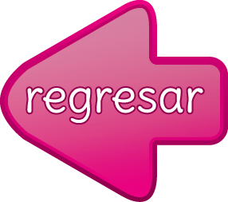

Cripto Diccionario
Bitcoin:
Criptomoneda principal y mas popular, creada por el autor anónimo Satoshi Nakamoto, de Japón, en el año 2009 criptomonedas en general:
Bitcoin:
Criptomoneda principal y mas popular, creada por el autor anónimo Satoshi Nakamoto, de Japón, en el año 2009.
Blockchain:
plataforma tecnológica de las criptomonedas, la cual se puede comparar a un libro contable digital de capacidad ilimitada, en el cual se registran y se graban todo tipo de transacciones.
Criptomoneda:
forma de dinero digital o virtual caracterizado por su seguridad (basada en la criptografía), su carácter descentralizado (sin intermediarios ni autoridad central), y su favorabilidad a la privacidad y transparencia en las transacciones.
Exchanges:
Plataformas o aplicativos web en los cuales puedes comprar y vender criptomonedas aplicando técnicas de trading.
Mineria:
mecanismo electrónico por el cual se crean nuevas criptomonedas y se mantiene la integridad y veracidad de la plataforma o blockchain y de todas sus transacciones.
Faucets:
formas de ganar criptomonedas de manera gratuita realizando ciertas tareas en aplicaciones o paginas web. (Por lo general lo que puedes ganar es muy poco y requiere de mucho tiempo y energía de tu computador, por lo cual no es muy recomendable.)
Fork:
proceso por el cual se realiza un cambio significante al algoritmo o al blockchain de una criptomoneda. Existen soft forks (cambios suaves) y hard forks (cambios radicales donde incluso se crean criptomonedas derivadas como es el caso de Bitcoin Cash)
Trading:
actividad financiera fundamentada en la venta o compra de criptomonedas basándose en conceptos como la especulación, volatilidad, conocimiento del mercado, tiempos y limites de compra o venta, lectura de gráficas, etc. Para empezar es necesario saber que el Bitcoin fue la primera
“criptomoneda” creada con el objetivo principal de “digitalizar y democratizar el dinero” por medio de una tecnología (blockchain)
descentralizada y anti-fraude. Luego del Bitcoin empezaron a surgir nuevas criptomonedas las cuales buscaban el mismo objetivo del Bitcoin con sus respectivas tecnologías y objetivos en areas como el movimiento de dinero, privacidad, entretenimiento, soluciones tecnológicas especificas, etc. Bitcoin es considerada como la criptomoneda mas importante actualmente y debes tener en cuenta que las demás criptomonedas en su gran mayoría comparten una visión y objetivos similares al Bitcoin, pero con pequeños detalles únicos y diferentes. Si entiendes como funciona el Bitcoin, podrás entender como funcionan las demás criptomonedas cuando las empieces a estudiar de manera individual. (Actualmente hay mas de 1000 criptomonedas que sobresalen en esta industria
ver coinmarketcap